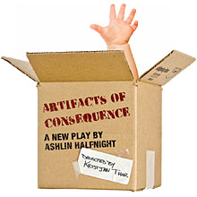

past performanceArtifacts of ConsequenceA play by Ashlin Halfnight |
From the companies that brought you the international hit God's Waiting Room ("Best Play" -FringeNYC 2005, "Tight ensemble acting...briskly well written and highly entertaining" -The New York Times)
Electric Pear Productions and Performance Lab 115 present In a crumbling, burnt-out America, an underwater bunker stores the relics of our everyday lives: Barbie, Moby Dick, Twinkies and bond traders are all preserved in a labyrinthine warehouse, shelved in boxes, awaiting the stabilization of the continent above. One woman is charged with safeguarding our cultural artifacts for the rebuilding of a great society... but the walls are leaking, resources are running out, and her wide-eyed assistant is hell-bent on losing her virginity to the first man she can find. As the facility nears collapse, it's clear that vast quantities of our legacy will be lost... What would you save? Two of the most groundbreaking and original companies in New York City team up to take on the myth of Theseus and the Minotaur with Artifacts of Consequence. This collaborative piece, which has been in development for 8 months, takes a theatrical, hilarious, and twisted look at a dystopian American landscape. Artifacts of Consequence is made possible in part with public funds from the Manhattan Community Arts Fund, supported by New York City Department of Cultural Affairs and administered by Lower Manhattan Cultural Council. Support also given by the New York Conservatory for Dramatic Arts. |
showtimes:April 16 - May 2 starring:
creative:
*Members of Actors Equity Association. An Equity Approved Showcase |
upcoming performances |
|||
 |
|||
| EVQ Film Festival 2018 August 20-25 |
|||
performance archives |
|||
| 2018 | 2017 | 2016 | 2015 |
| 2014 | 2013 | 2012 | 2011 |
| 2010 | 2009 | 2008 | 2007 |